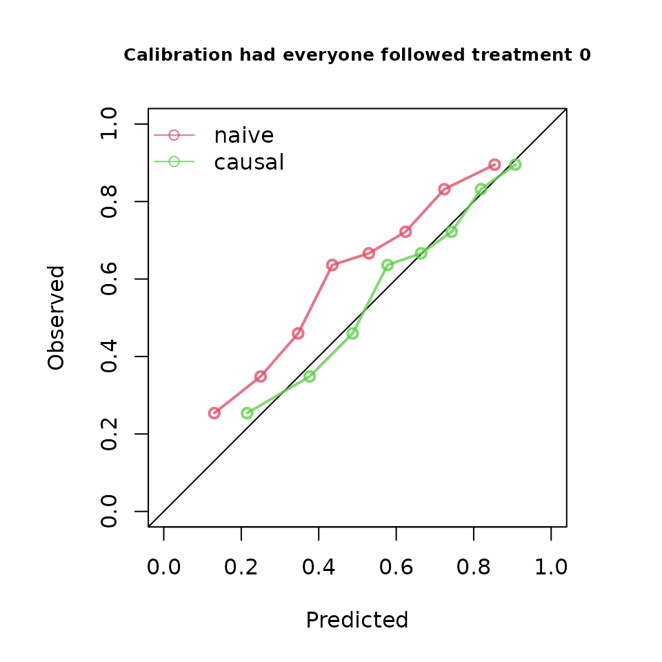
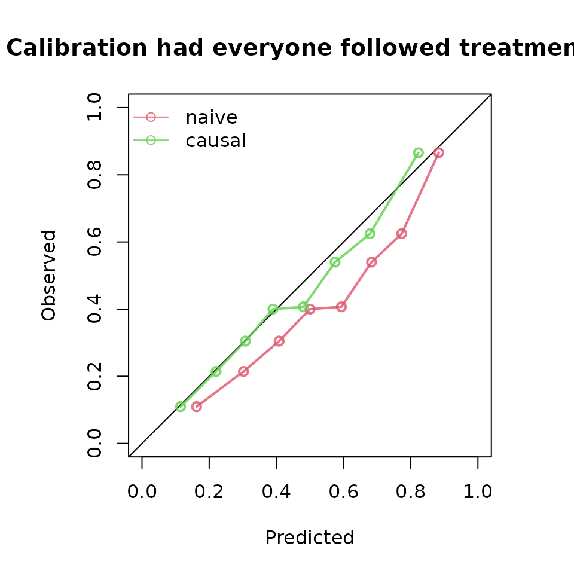

ipeval: an R package for evaluating predictions under interventions
Jasper W.A. van Egeraat, Ruth Keogh, Nan van Geloven
Source:vignettes/ipeval.Rmd
ipeval.RmdAbstract
We present the R package ipeval, which facilitates evaluation of the predictive performance of models that enable predictions to be generated under hypothetical intervention settings using observational data. The package currently supports binary outcomes and time-to-event outcomes under binary (point) interventions. It implements methods to assess counterfactual predictive performance using inverse probability of treatment weighting (IPTW).
Introduction
Certain prediction models aim to estimate an individual’s risk under hypothetical intervention scenarios, where intervention can e.g. be a certain medical treatment but could also be a certain behavioral change or health policy. These are referred to as interventional/causal/counterfactual prediction models or models for prediction under interventions.1 For example, a model may estimate a patient’s risk if untreated, if undergoing surgery, or if initiating medication.2–4 Models may also facilitate risk predictions under several treatment options.5
Because such predictions under interventions are often intended to inform medical decision-making, rigorous validation is essential. In standard prediction settings, validation involves comparing estimated risks with observed outcomes in a validation dataset. This approach is not directly applicable to predictions under interventions in observational data. Each individual typically receives only one intervention, and outcomes that they would have had under alternative interventions remain unobserved. These are referred to as counterfactual outcomes in causal inference terminology.6
When models are used to guide treatment decisions, their performance must be evaluated under all relevant intervention options for each individual in the validation data, not only under the interventions that were actually observed.1,7,8 Because clinicians generally assign treatments based on patient characteristics, treatment groups may not be comparable due to confounding. Because of this, a model that accurately estimates the risk of a patient under treatment may not perform well estimating their counterfactual risk under no treatment, even if the model also performs well in the group of patients that were actually untreated.
Evaluating performance of the predictions under only the observed treatments reflects predictive performance under the historical treatment assignment mechanism present in the observed data. If such models are used to inform treatment decisions in new patients, the treatment assignment mechanism may change, rendering conventional performance measures less relevant. In fact, a model that performs well under historical treatment assignment mechanism can lead to harmful decisions when applied to new patients.9
The appropriate target is counterfactual predictive performance: the agreement between estimated risks under the specific intervention option of interest and the outcomes that would be observed if all individuals were assigned that intervention. For example, how well do estimated risks align with outcomes in a hypothetical scenario where all patients receive treatment? Despite its importance, a recent review indicates that this type of validation is rarely conducted.10 This package addresses this gap by providing tools to perform such evaluations for binary and time-to-event outcomes, based on the work of Keogh and Van Geloven (2024).1
Methods
The implementation uses the observed validation data to approximate a counterfactual dataset representing a population in which all individuals receive a specified treatment option. This is achieved via inverse probability of treatment weighting (IPTW). Each individual is weighted by the inverse of the probability of receiving their observed treatment conditional on confounders. This reweighting allows individuals who received a given treatment to represent similar individuals who did not receive this treatment. Validity of this approach relies on standard causal assumptions: conditional exchangeability, consistency, positivity, and correct specification of the treatment model. More details are given elsewhere.1,6,7
Predictive performance under a given intervention is then evaluated by comparing estimated risks with observed outcomes in the weighted (pseudo-)population. The package supports the following performance metrics: area under the receiver operating characteristic curve (AUC), Brier score, observed-expected (O/E) ratio, and calibration plots.
Illustration
Inputs required to the functions in this package include: (1) a validation data set in which the performance of an interventional prediction model is to be evaluated, and (2) models from which predictions can be made under a specified binary intervention for individuals in the validation data.
To develop the interventional prediction model, we first simulate development data as in the DAG in Figure 1 for binary treatment , binary outcome , continuous confounder and an additional predictor . Treatment assignment depends on , and treatment has a protective effect on the outcome (if the probability of is lower than if ).

library(ipeval)
simulate_data <- function(n, seed) {
set.seed(seed)
data <- data.frame(id = 1:n)
data$L <- rnorm(n)
data$A <- rbinom(n, 1, plogis(2*data$L))
data$P <- rnorm(n)
data$Y <- rbinom(n, 1, plogis(0.5 + data$L + 1.25 * data$P - 0.9*data$A))
data
}
df_dev <- simulate_data(n = 5000, seed = 1)
head(df_dev)
#> id L A P Y
#> 1 1 -0.6264538 0 -0.7948034 0
#> 2 2 0.1836433 0 0.6060846 1
#> 3 3 -0.8356286 0 -1.0624674 0
#> 4 4 1.5952808 1 1.0192005 1
#> 5 5 0.3295078 1 0.1776102 0
#> 6 6 -0.8204684 0 -1.0309747 0Suppose that the aim of our models are for informing whether patients should receive treatment or not, by providing estimates of what their risk would be if they were treated and what it would be if they were untreated. We create two prediction models using the development data, from which such predictions could be obtained. The ‘naive model’ and the ‘causal model’ both include A and P as predictors for Y.
The naive model ignores confounding by .
# naive model, not accounting for confounding variable L
model_naive <- glm(Y ~ A + P, "binomial", df_dev)
print(coefficients(model_naive))
#> (Intercept) A P
#> -0.07755949 0.26229542 1.15054747The causal model controls for the confounding by L through inverse probability weights:
# causal model, accounting for L by IPTW
trt_model <- glm(A ~ L, "binomial", df_dev)
propensity_score <- predict(trt_model, type = "response")
iptw <- 1 / ifelse(df_dev$A == 1, propensity_score, 1 - propensity_score)
model_causal <- glm(Y ~ A + P, "binomial", df_dev, weights = iptw)
print(coefficients(model_causal))
#> (Intercept) A P
#> 0.4936374 -0.7629892 1.1213506The naive and causal models can generate predictions under treatment (setting to 1) and predictions under no treatment ( to 0), given values of the predictors . The estimated coefficient for of the naive model is positive due to confounding. This arises because individuals with high values of are more likely to receive treatment. Although treatment reduces risk, these individuals typically remain at higher risk than untreated individuals because also directly increases the outcome risk. As a result, the naive model captures associations induced by the treatment assignment mechanism rather than the underlying causal effect. As a consequence, the risk under treatment is estimated to be higher than under no treatment, implying that this model would recommend withholding treatment for all patients.
The causal model correctly infers that treatment benefits patients. Note that the ‘true’ effect of A was generated within a model that also conditions on L. Due to non-collapsibility, the estimated coefficient is not expected to coincide with the effect used in the data-generating mechanism.
We next assess the performance of both models in an external validation dataset, which may in general differ in its underlying data-generating mechanism. In this illustrative example, the validation data are generated using the same process.
df_val <- simulate_data(n = 10000, seed = 2)
head(df_val)
#> id L A P Y
#> 1 1 -0.89691455 1 -0.8206868 0
#> 2 2 0.18484918 0 0.1662410 1
#> 3 3 1.58784533 1 0.1747081 0
#> 4 4 -1.13037567 0 1.0416555 0
#> 5 5 -0.08025176 1 -0.1434224 0
#> 6 6 0.13242028 0 1.2078019 1In traditional validation studies, it is common to leave the data as it is, and compute the performance metrics on this observed dataset, where some patients were treated and others were not, and treatment assignment is dependent on confounders.
observed_score(
object = list(
"naive" = model_naive,
"causal" = model_causal
),
data = df_val,
outcome = Y,
metrics = c("auc", "brier", "oeratio")
)
#>
#> model auc brier oeratio
#> null model 0.500 0.250 1.000
#> naive 0.764 0.197 0.997
#> causal 0.739 0.208 0.977Under this evaluation, the naive model appears to outperform the causal model. However, these performance measures quantify the performance of the models under the treatment assignment strategy present in the evaluation data. It quantifies a mixture of performance of the estimated risk under treatment of patients that were treated, and of performance of the estimated risk under no treatment of patients that were not treated. It does not assess the performance of risks under treatment of patients that were not treated and vice versa. If these models were to be used for decision-making, the treatment assignment mechanism would change, and these performance estimates would no longer be relevant.
What we really seek to evaluate is whether both untreated risk and treated risk are accurate compared to the outcomes all patients would get if they were to be untreated and treated, respectively. Thus, the question that we would like to have answered is the following:
How well does our prediction model perform if we were to treat nobody? And if we were to treat everybody?
The ipeval package aims to provide tools to answer questions like
these. The main function ip_score() can be used for this.
This function estimates several predictive performance measures in a
validation dataset, printing by default the assumptions required for
valid inference.
Comparing the risk under no treatment to the counterfactual outcomes under no treatment:
ip_score(
object = list(
"naive" = model_naive,
"causal" = model_causal
),
data = df_val,
outcome = Y,
treatment_formula = A ~ L,
treatment_of_interest = 0,
null_model = FALSE
)
#> Estimation of the performance of the prediction model in a
#> pseudopopulation where everyone's treatment A was set to 0.
#> The pseudopopulation is constructed from 4941 (49.4%) subjects
#> ($pseudopop) in data who indeed received treatment level 0. These
#> subjects are reweighted to represent the full target population under a
#> hypothetical intervention in which everyone received this treatment
#> level.
#> The following assumptions must be satisfied for correct inference:
#>
#> Causal assumptions:
#>
#> - Conditional exchangeability: after adjustment for the covariates used
#> to construct the inverse probability of treatment weights (IPTW), i.e.,
#> {L}, there is no unmeasured confounding for the relation between
#> treatment and outcome.
#> - Conditional positivity: the probability of receiving treatment level
#> 0 should be greater than zero for each value (combination) of the
#> variable(s) {L} that is observed in the full population. The
#> distribution of IPT-weights can be assessed with
#> $ipt$weights[$pseudopop$ids].
#> - Consistency: the observed outcome under the received treatment level
#> equals the potential outcome under that treatment level. This includes
#> the assumption of no interference between subjects.
#>
#> Modeling assumptions:
#>
#> - Correctly specified propensity model. Estimated treatment model is
#> logit(A) = 0.01 + 2.01*L. See also $ipt$model.
#>
#> Performance estimates:
#>
#> model auc brier scaled_brier oeratio
#> naive 0.755 0.208 12.6 1.25
#> causal 0.755 0.194 18.8 1.01
And, similarly, comparing the risk under treatment to the corresponding counterfactual outcome (this time not printing the assumptions):
ip_score(
object = list(
"naive" = model_naive,
"causal" = model_causal
),
data = df_val,
outcome = Y,
treatment_formula = A ~ L,
treatment_of_interest = 1,
null_model = FALSE,
quiet = TRUE
)
#>
#> model auc brier scaled_brier oeratio
#> naive 0.76 0.208 15.2 0.806
#> causal 0.76 0.196 20.3 0.967
From these performance metrics it can be seen that for both treatment options, the causal model outperforms the naive model in predicting the counterfactual outcome that we would observe if we were to set every patients treatment to the corresponding treatment.
Other functions of the package include support for bootstrapping for confidence intervals. Survival models such as Cox models can also be validated on right censored survival data.
Discussion
In standard validation, the naive prediction model appeared to perform better, while the causal model demonstrated superior performance when evaluated under counterfactual scenarios. Relying solely on standard validation could lead to the erroneous conclusion that the naive model is preferable for decision support. According to the naive model, nobody should receive treatment, as it predicts higher risk under treatment (setting to 1) than under no treatment (setting a to 0).
This example highlights a fundamental issue: a model that performs well in predicting observed outcomes may not provide accurate predictions under alternative, hypothetical treatment strategies. Consequently, validation based solely on observed data may not reflect the model’s performance in the intended decision-making context. Counterfactual validation addresses this limitation by aligning the evaluation with the decision context. The counterfactual performance assessment indicates that the causal model is superior to the naive model when used for treatment decision making.
It should be noted that counterfactual performance estimation remains dependent on causal assumptions. Violations, such as unmeasured confounding or model misspecification, may lead to biased estimates.1,6
Future directions
Many prediction models intended for decision support are currently not validated within a counterfactual framework. By providing accessible implementations of these methods, ipeval aims to facilitate more appropriate validation practices. Future developments will focus on extending the package to longitudinal treatment strategies where time-dependent confounding arises, and to settings involving competing risks.